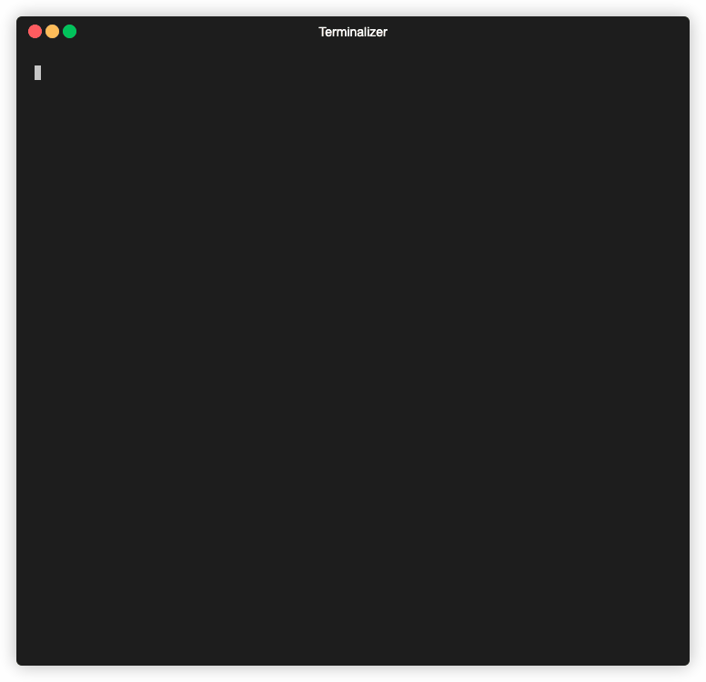
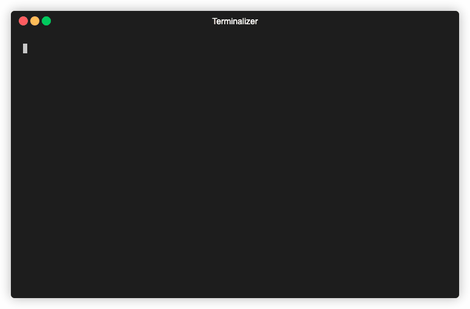
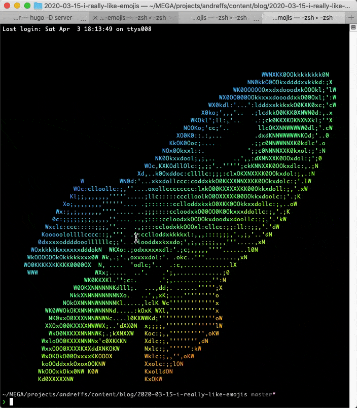

I came across a blogpost that explained how to add emoji’s to your terminal prompt, something like this:

The post is pretty good!
Not only explains how to add emoji’s to you prompt, but also goes a bit further on how to $RANDOM an emoji from a list of them, and bash formatting (customize the text in your terminal with colors and such).
Although I’m pretty happy with my terminal setup (shameless plug to 👉 my dotfiles👈 ), I kept coming back to this idea. It would be cool to use this, but instead of showing a random emoji in my prompt, use it as a “Welcome message” every time I open a new terminal session.
🤔
Welcome
Every time I open a new session, a “rainbow-colored-ascii-art” reference to “The circle game” just pops up on my terminal, making me a very funny person around the office 🙃

The way it works is: on my ~/.bashrc file, I am sourcing a text file with the ascii art of the “okay hand”, piping it through “lolcat”.
lolcat is just a funny tool that colors everything that you pipe it through.
|
|
Plan
Inspired by Luciano’s blogpost, I’m going to revamp my “Welcome” screen!
Instead of printing a big static ascii “you just lost the game” reference, I wanted to print a random emoji and for this I needed to find a way to convert an emoji to ascii art.
For the first version I just stored different ascii art emoji’s in different files and randomly selected one to print. It worked but was kinda clunky and not easy to add more. What if I wanted to add different emoji’s? What if I wanted allll emojies 😭 ?
So after a couple of iterations on the idea, I end up with the following plan:
- The welcome screen should be a simple one-liner command
- From a list of emoji’s, select one, randomly (🙏 Luciano)
- Find a way to get an image out of it
- Convert the image to ascii art and print it on the terminal with
lolcat, because it looks nice 🏳️🌈
One liner to rule them all
Alright! Changing my ~/.bashrc is simple enough, I just need to move the code to a function and call it from there:
|
|
|
|
Select an emoji
Heavily inspired by Luciano’s idea, we can change our olhaaqui() function to instead of sourcing a text file, to choose an emoji and print it:
|
|
Although, running it a couple of times I started to notice that we would get an empty emoji every now and then.
To illustrate this, I’m storing the random index in a variable and printing it so we can visualize better what is happening:
|
|

As you can see by my highly technical testing method, sometimes we don’t have emojis.
TL;DR from stackoverflow:
- bash array indexing starts at 0 (always)
- zsh array indexing starts at 1
This mean that we are returning values between 0 and len(emojies) - 1. To fix this I opted to implement max(INDEX, 1). This way if we get zero the function returns one instead.
|
|

Download emojis automatically
Found this amazing blogpost that has some example on to convert emojis to .png images. It works just like an API endpoint, where one of the parameters is the emoji itself.
For example: https://xn–i-7iq.ws/emoji-image/🚀.png?format=emojione&ar=1x1
{kind=link}
If you open the above link you can see that emoji as a .png image. Now we just need to download it. For that, we can rely on our good old wget:
|
|
Awesome! We can now update our olhaaqui() snippet to also download the emoji image:
|
|
Convert into Ascii art
Now we are just missing the ascii art! For that we can use jp2a, which is a simple command line util to convert jpegs into ascii.
Since our image is a .png, we also need to convert it from .png to .jpg format, which we can simply use the convert command.
|
|
Finally, we can just pipe our ascii art .txt through lolcat and thats it:

Hum, all white pixels are being converted to “M”. We can solve this by just replacing them with empty string:
|
|

Adding those commands to our olhaaqui() function looks like this:
|
|
Cache it
This is working fine, but we can see that it’s taking a bit of time to show our new “Welcome” screen.

This is because we are downloading an emoji image, and converting it to ascii, every time we open a new terminal session. On top of that, we are creating a bunch of files on the directory we are opening the session. Over time, not only we make a bunch of unnecessary request but we also keep a bunch of files that are not used:

So, to keep this clean, we can create an “emoji folder” to store all these files, and use that to check if should download the emoji again. The overall idea looks something like this:
stored locally?} --> |No| C B --> |Yes| Z C["wget + convert + sed $EMOJI"] --> D D["Store it locally"] --> Z Z["$ cat $EMOJI | lolcat"]
We just need to add a couple of extra things to our olhaaqui() to make it work flawlessly:
- Create an “emoji” folder where we store all previously downloaded emoji’s;
- “IF” emoji already exists, then use that one;
- Otherwise, do the whole “download + convert + sed” and also, delete all temporary .png, .jpg and .txt.bak files.
Those files are generated from our script. The images can be deleted since they are just used to get to ascii art. The .txt.bak file is created when we run the
sedcommand with the-iflag. It overrides the original $EMOJI file but also generates a backup with the .bak extension. We don’t need those.
|
|
Moving this to your ~/.bashrc and you’ll have the following:

Resources
- Luciano’s blogpost on adding emojis to your prompt: https://loige.co/random-emoji-in-your-prompt-how-and-why/
- The circle game: https://knowyourmeme.com/memes/the-circle-game
- Download Emoji’s API: https://emoji-domains.medium.com/free-emoji-image-generator-api-c0b7eaefa586
- How to convert from .png to .jpg: https://superuser.com/questions/71028/batch-converting-png-to-jpg-in-linux
- Convert .jpg file to Ascii Art: https://github.com/cslarsen/jp2a
lolcatutility https://github.com/busyloop/lolcat
👋